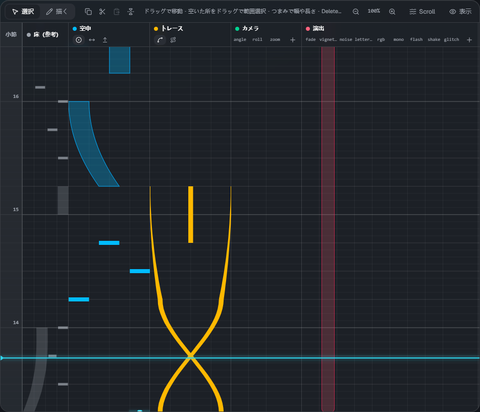
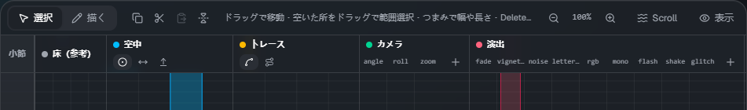
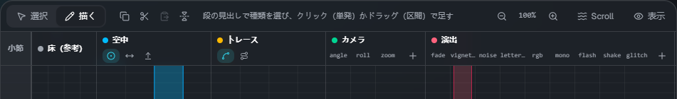
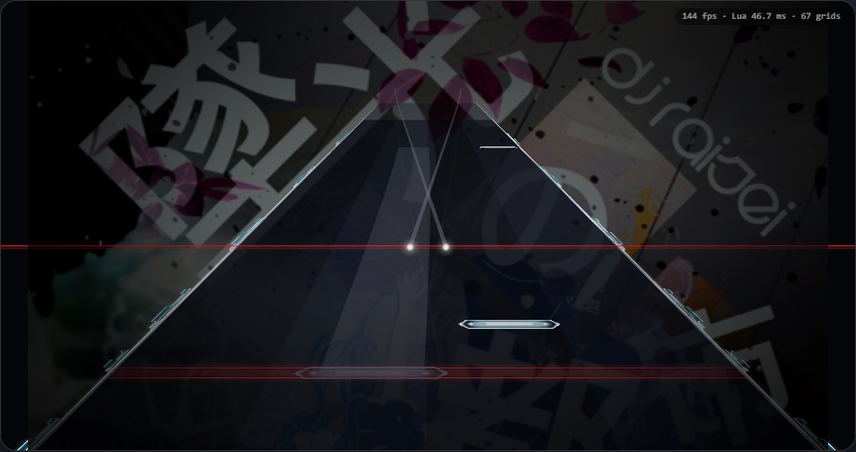

タイムライン

時間は下から上へ流れます（Malody のエディターと同じ向き）。水色の横線が今の位置（再生線）です。
左端の数字は小節の番号で、小節線は lane3d.ex の measure の行に合わせて引きます。
段
| 段 | 置くもの |
|---|---|
| 小節 | 小節の目盛り。クリック・ドラッグで再生線をその位置へ動かします |
| 床（参考） | 譜面（.mc）の床のノーツ。見るだけで、編集はしません。ノーツグループごとに色が付きます |
| 空中 | AirTap・AirSlide・AirLift |
| トレース | Trace（線）・Guide（床の帯） |
| カメラ | cam。項目（angle・roll・zoom など）ごとに列があります。＋ で列を足せます |
| 演出 | fx。種類（fade・flash・glitch など）ごとに列があります。＋ で列を足せます |
右上の 「表示」 で、段を隠したり出したりできます。
道具の帯

左から、選択 / 描くの切り替え、コピー・切り取り・貼り付け・左右反転、操作のヒント、伸縮、Scroll（流れ方）、表示する段です。
選ぶ・動かす（選択モード）
選択（V）のときの操作です。
- 要素をクリックで選び、ドラッグで動かします
- 選んだ要素に出るつまみをドラッグすると、幅・長さ・終わりの位置・トレースの高さを変えられます
- 何も無い所をドラッグすると、範囲で選べます。Shift+クリックで選択に足す / 外す
- Delete（または Backspace）で削除、Esc で選択を外します
- 複数を選ぶと、まとめて動かせます
足す（描くモード）

描く（B）にして、段をクリック・ドラッグすると要素を足せます。
- 空中・トレースの段は、見出しの小さなボタンで種類を選びます（押すと描くモードになります）
- クリックで単発（AirTap）、ドラッグで区間（AirSlide・Trace など）を作ります。上へドラッグした所が終わりです
- カメラ・演出は、置きたい項目の列をクリック・ドラッグします
- 新しく足すノーツの幅は、最後に変えた幅を使います
何か選んでいるときに段をクリックすると、まず選択が外れます（もう一度クリックすると足せます）。
スナップ
ツールバーの 拍スナップ と 横スナップ で、置く・動かすときの刻みを決めます。
- 拍スナップ: 1拍の分割（1/1〜1/16）
- 横スナップ: 横位置の刻み（8・16・32・64。64 がおよそ1レーン）
- 左のスイッチで ON / OFF。Alt を押している間は、一時的に両方切れます
伸縮
Ctrl+ホイールか、帯の − / ＋ で、1拍の高さを 25〜400% に変えられます。倍率を押すと 100% に戻ります。
コピー・貼り付け・左右反転
| 操作 | キー |
|---|---|
| すべて選ぶ | Ctrl+A |
| コピー / 切り取り | Ctrl+C / Ctrl+X |
| 貼り付け（再生線の位置へ） | Ctrl+V |
| 左右反転 | H |
再生とプレビュー

- Space で再生 / 一時停止、Home で先頭へ。ツールバーに時刻・小節:拍・BPM が出ます
- プレビューはスキンのスクリプトをそのまま動かしているので、ゲームと同じ見え方です。要素を変えると少し後に反映されます
- Tap音: 再生中、床と空中のノーツの頭で音を鳴らします（トレースは鳴りません）。▾ で音量を変えられます
キーの近道
| キー | 内容 |
|---|---|
| Space | 再生 / 一時停止 |
| Home | 先頭へ |
| V / B | 選択モード / 描くモード |
| Delete・Backspace | 選んだ要素を削除 |
| Esc | 選択を外す |
| Ctrl+A / C / X / V | すべて選ぶ / コピー / 切り取り / 貼り付け |
| H | 左右反転 |
| Alt（押している間） | スナップを一時的に切る |
| Ctrl+ホイール | 伸縮 |
| Ctrl+S / Ctrl+Shift+S | 保存 / ダウンロードで保存 |
文字を打つ欄にいるときは、保存以外のキーは効きません。